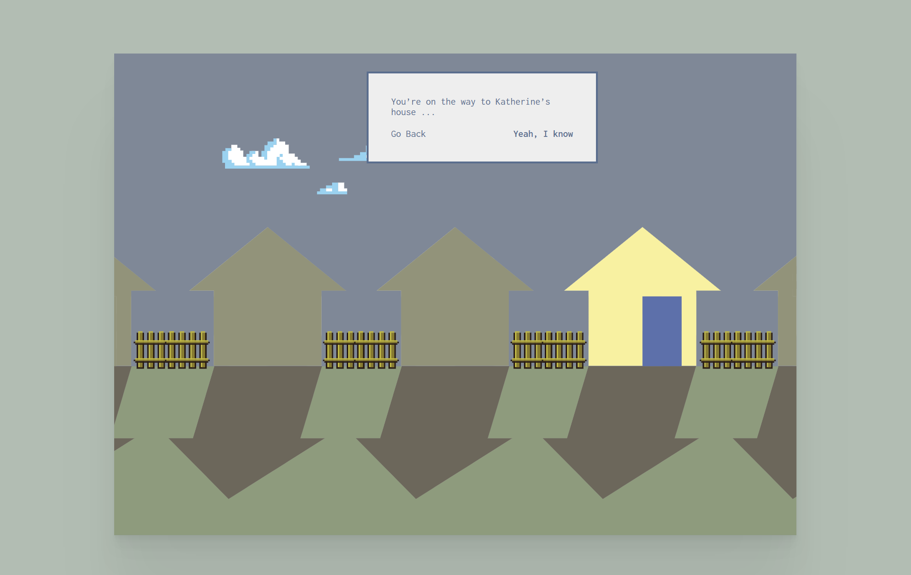

내용과 형식의 관계
간결한 그래픽은 가운데 그래픽만 밝은 색이다. 나머지는 모두 회색빛이다. 사용자들이 쉽게 입구를 찾아 볼 수 있게 하고, 게임 인터페이스와 같은 디자인은 독서의 흥미를 높이고, 더욱 인터랙티브하게 할 수 있다.
웹페이지 사이의 구성
웹사이트의 페이지 레이아웃은 매우 간결하고 탐색이 용이하며 각 페이지는 예술 전시 페이지, 예술가 소개 페이지 및 프로젝트 설명과 같은 큰 전시관처럼 예술 작품을 중심으로 설계되었습니다.각 부분은 명확한 링크나 메뉴 항목으로 연결되어 전체적인 스타일이 일관됩니다.
PC/모바일 접속 시 차이
pc엔드에서 모든 배치와 꽃 전시 정보를 볼 수 있고, 모바일엔드를 더 열어봐야 정보를 볼 수 있는 디자인도 사용자의 흥미와 호기심을 자극한다.